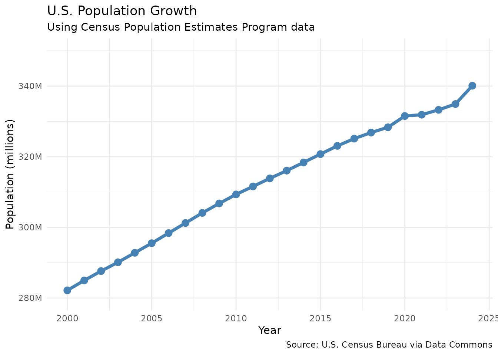
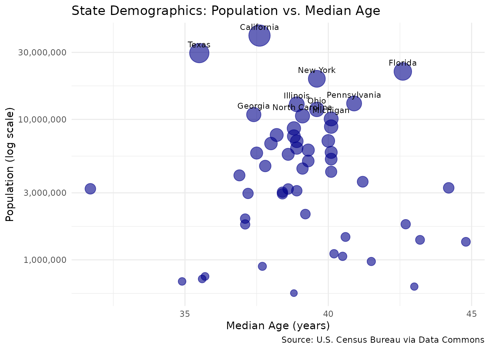
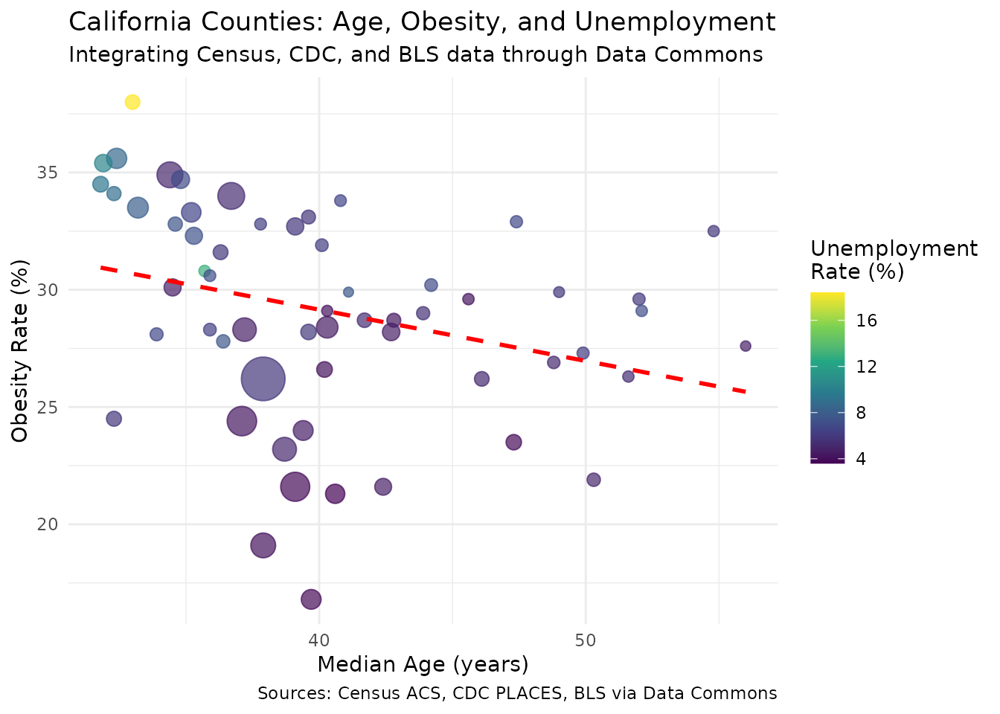
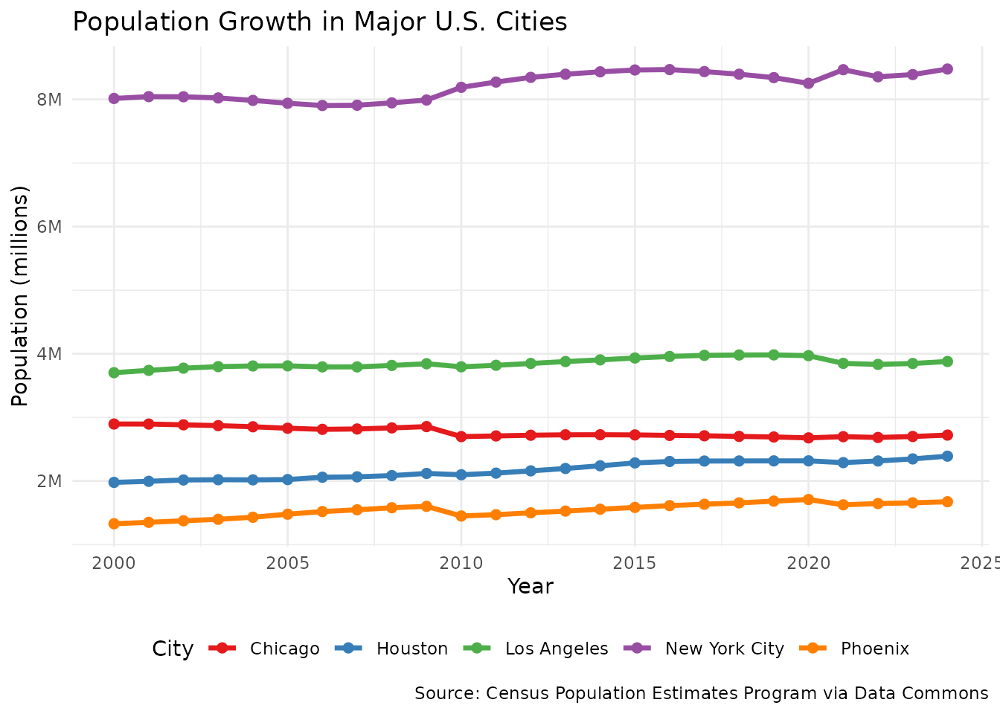

vignettes/analyzing-census-data.Rmd
analyzing-census-data.RmdBy the end of this vignette, you will be able to:
datacommons R packageCensus data provides an ideal introduction to Data Commons for several reasons:
Familiar territory: Many analysts have worked with census data, making it easier to focus on learning the Data Commons approach rather than the data itself.
Rich relationships: Census data showcases the power of the knowledge graph through natural hierarchies (country → state → county → city), demonstrating how Data Commons connects entities.
Integration opportunities: Census demographics become even more valuable when combined with health, environmental, and economic data—showing the true power of Data Commons.
Real-world relevance: The examples we’ll explore address actual policy questions that require integrated data to answer properly.
The R ecosystem has excellent packages for specific data sources. For example, the tidycensus package provides fantastic functionality for working with U.S. Census data, with deep dataset-specific features and conveniences.
So why use Data Commons? The real value is in data integration.
Data Commons is part of Google’s philanthropic initiatives, designed to democratize access to public data by combining datasets from organizations like the UN, World Bank, and U.S. Census into a unified knowledge graph.
Imagine you’re a policy analyst studying the social determinants of health. You need to analyze relationships between:
With traditional approaches, you’d need to:
Data Commons solves this by providing a unified knowledge
graph that links all these datasets together. One API, one set
of geographic identifiers, one consistent way to access everything. The
datacommons R package is your gateway to this integrated
data ecosystem, enabling reproducible analysis pipelines that seamlessly
combine diverse data sources.
Data Commons organizes information as a graph, similar to how web pages link to each other. Here’s the key terminology:
Every entity in Data Commons has a unique identifier called a DCID. Think of it like a social security number for data:
country/USA = United StatesgeoId/06 = California (using FIPS code 06—Federal
Information Processing Standards codes are essentially ZIP codes for
governments, providing standard numeric identifiers for states,
counties, and other geographic areas)Count_Person = the statistical variable for population
countEntities are connected by relationships, following the Schema.org standard—a collaborative effort to create structured data vocabularies that help machines understand web content. For Data Commons, this means consistent, machine-readable relationships between places and data:
containedInPlace)–> United StatestypeOf)–> StatecontainedInPlace)–>
CaliforniaThis structure lets us traverse the graph to find related
information. Want all counties in California? Follow the
containedInPlace relationships backward.
These are the things we can measure:
Count_Person = total populationMedian_Age_Person = median ageUnemploymentRate_Person = unemployment rateMean_Temperature = average temperatureThe power comes from being able to query any variable for any place
using the same consistent approach through the datacommons
R package.
You’ll need a free API key from https://docs.datacommons.org/api/#obtain-an-api-key
# Set your API key
dc_set_api_key("YOUR_API_KEY_HERE")
# Or manually set DATACOMMONS_API_KEY in your .Renviron fileDon’t forget to restart your R session after setting the key to automatically load it.
The datacommons R package requires three key pieces:
"all" to retrieve the entire time series"latest" for the most recent available data"2020" or date rangesLet’s see how to find these in practice.
Real-world motivation: Understanding population growth patterns is fundamental for policy planning, from infrastructure investments to social security projections. Let’s examine U.S. population trends to see how growth has changed over time.
# Get U.S. population data
# We found these identifiers using the Data Commons website:
# - Variable: "Count_Person" (from Statistical Variable Explorer)
# - Place: "country/USA" (from Place Explorer)
us_population <- dc_get_observations(
variable_dcids = "Count_Person",
entity_dcids = "country/USA",
date = "all",
return_type = "data.frame"
)
# Examine the structure
glimpse(us_population)
#> Rows: 490
#> Columns: 8
#> $ entity_dcid <chr> "country/USA", "country/USA", "country/USA", "country/US…
#> $ entity_name <chr> "United States of America", "United States of America", …
#> $ variable_dcid <chr> "Count_Person", "Count_Person", "Count_Person", "Count_P…
#> $ variable_name <chr> "Total population", "Total population", "Total populatio…
#> $ date <chr> "1900", "1901", "1902", "1903", "1904", "1905", "1906", …
#> $ value <int> 76094000, 77584000, 79163000, 80632000, 82166000, 838220…
#> $ facet_id <chr> "2176550201", "2176550201", "2176550201", "2176550201", …
#> $ facet_name <chr> "USCensusPEP_Annual_Population", "USCensusPEP_Annual_Pop…
# Notice we have multiple sources (facets) for the same data
unique(us_population$facet_name)
#> [1] "USCensusPEP_Annual_Population"
#> [2] "CensusACS5YearSurvey_AggCountry"
#> [3] "CensusACS5YearSurvey"
#> [4] "USDecennialCensus_RedistrictingRelease"
#> [5] "WorldDevelopmentIndicators"
#> [6] "USCensusPEP_AgeSexRaceHispanicOrigin"
#> [7] "OECDRegionalDemography_Population"
#> [8] "CensusACS5YearSurvey_SubjectTables_S0101"
#> [9] "CensusACS5YearSurvey_SubjectTables_S2601A"
#> [10] "CensusACS5YearSurvey_SubjectTables_S2602"
#> [11] "CensusACS5YearSurvey_SubjectTables_S2603"
#> [12] "CDC_Mortality_UnderlyingCause"
#> [13] "CensusPEP"
#> [14] "CensusACS1YearSurvey"
#> [15] "WikidataPopulation"Data Commons aggregates data from multiple sources. This is both a strength (comprehensive data) and a challenge (which source to use?). Let’s handle this:
# Strategy 1: Use the official Census PEP (Population Estimates Program)
us_pop_clean <- us_population |>
filter(facet_name == "USCensusPEP_Annual_Population") |>
mutate(
year = as.integer(date),
population_millions = value / 1e6
) |>
filter(year >= 2000) |>
select(year, population_millions) |>
arrange(year)
# Visualize the clean data
ggplot(us_pop_clean, aes(x = year, y = population_millions)) +
geom_line(color = "steelblue", linewidth = 1.5) +
geom_point(color = "steelblue", size = 3) +
scale_y_continuous(
labels = label_number(suffix = "M"),
limits = c(280, 350)
) +
scale_x_continuous(breaks = seq(2000, 2025, 5)) +
labs(
title = "U.S. Population Growth",
subtitle = "Using Census Population Estimates Program data",
x = "Year",
y = "Population (millions)",
caption = "Source: U.S. Census Bureau via Data Commons"
)
# Calculate average annual growth
growth_rate <- us_pop_clean |>
mutate(
annual_growth =
(population_millions / lag(population_millions) - 1) * 100
) |>
summarize(
avg_growth = mean(annual_growth, na.rm = TRUE),
pre_2020_growth = mean(annual_growth[year < 2020], na.rm = TRUE),
post_2020_growth = mean(annual_growth[year >= 2020], na.rm = TRUE)
)
message(
"Average annual growth rate: ", round(growth_rate$avg_growth, 2), "%\n",
"Pre-2020 growth rate: ", round(growth_rate$pre_2020_growth, 2), "%\n",
"Post-2020 growth rate: ", round(growth_rate$post_2020_growth, 2), "%"
)
# Note for statistics enthusiasts: We're using arithmetic mean for simplicity.
# For compound growth rates, geometric mean would be more precise, which you can
# calculate as geometric_mean_growth = (last_value/first_value)^(1/n_years) - 1.
# But given the small annual changes (~0.7%), the difference is negligible.Key insight: Notice the marked change in growth
patterns around 2020. While pre-2020 showed steady growth, the post-2020
period reveals a significant slowdown. This dramatic shift raises
important policy questions: How much is due to COVID-19 mortality versus
changes in immigration patterns or birth rates? The
datacommons package makes it easy to pull in additional
variables like death rates, immigration statistics, and birth rates to
investigate these questions further.
# Strategy 2: Take the median across all sources for each year
us_pop_aggregated <- us_population |>
filter(!is.na(value)) |>
mutate(year = as.integer(date)) |>
filter(year >= 2000) |>
group_by(year) |>
summarize(
population_millions = median(value) / 1e6,
n_sources = n_distinct(facet_name),
.groups = "drop"
)
# Show which years have the most sources
us_pop_aggregated |>
slice_max(n_sources, n = 5) |>
kable(caption = "Years with most data sources")| year | population_millions | n_sources |
|---|---|---|
| 2017 | 325.0538 | 12 |
| 2019 | 328.2395 | 12 |
| 2018 | 326.6875 | 11 |
| 2020 | 329.8250 | 11 |
| 2021 | 331.9714 | 10 |
| 2022 | 332.1845 | 10 |
| 2023 | 333.6512 | 10 |
Real-world motivation: State-level demographic analysis is crucial for understanding regional variations in aging, which impacts healthcare planning, workforce development, and social services allocation.
# Method 1: Use the parent/child relationship in observations
state_data <- dc_get_observations(
variable_dcids = c("Count_Person", "Median_Age_Person"),
date = "latest",
parent_entity = "country/USA",
entity_type = "State",
return_type = "data.frame"
)
# The code automatically constructs the following query:
# Find all entities of type State contained in country/USA
glimpse(state_data)
#> Rows: 724
#> Columns: 8
#> $ entity_dcid <chr> "geoId/01", "geoId/01", "geoId/01", "geoId/01", "geoId/0…
#> $ entity_name <chr> "Alabama", "Alabama", "Alabama", "Alabama", "Alabama", "…
#> $ variable_dcid <chr> "Count_Person", "Count_Person", "Count_Person", "Count_P…
#> $ variable_name <chr> "Total population", "Total population", "Total populatio…
#> $ date <chr> "2019", "2023", "2020", "2023", "2023", "2023", "2023", …
#> $ value <dbl> 4903185, 5054253, 4921532, 5054253, 5054253, 5054253, 21…
#> $ facet_id <chr> "1226172227", "196790193", "2825511676", "1145703171", "…
#> $ facet_name <chr> "CensusACS1YearSurvey", "CensusACS5YearSurvey_SubjectTab…
# Process the data - reshape from long to wide
state_summary <- state_data |>
filter(str_detect(facet_name, "Census")) |> # Use Census data
select(
entity = entity_dcid,
state_name = entity_name,
variable = variable_dcid,
value
) |>
group_by(entity, state_name, variable) |>
# Take first if duplicates
summarize(value = first(value), .groups = "drop") |>
pivot_wider(names_from = variable, values_from = value) |>
filter(
!is.na(Count_Person),
!is.na(Median_Age_Person),
Count_Person > 500000 # Focus on states, not small territories
)
# Visualize the relationship
ggplot(state_summary, aes(x = Median_Age_Person, y = Count_Person)) +
geom_point(aes(size = Count_Person), alpha = 0.6, color = "darkblue") +
geom_text(
data = state_summary |> filter(Count_Person > 10e6),
aes(label = state_name),
vjust = -1, hjust = 0.5, size = 3
) +
scale_y_log10(labels = label_comma()) +
scale_size(range = c(3, 10), guide = "none") +
labs(
title = "State Demographics: Population vs. Median Age",
x = "Median Age (years)",
y = "Population (log scale)",
caption = "Source: U.S. Census Bureau via Data Commons"
)
# Find extremes
state_summary |>
filter(
Median_Age_Person == min(Median_Age_Person) |
Median_Age_Person == max(Median_Age_Person)
) |>
select(state_name, Median_Age_Person, Count_Person) |>
mutate(Count_Person = label_comma()(Count_Person)) |>
kable(caption = "States with extreme median ages")| state_name | Median_Age_Person | Count_Person |
|---|---|---|
| Maine | 44.8 | 1,377,400 |
| Utah | 31.7 | 3,205,958 |
Key insight: The 13-year gap between Maine (44.8) and Utah (31.7) in median age represents dramatically different demographic challenges. Maine faces an aging workforce and increasing healthcare demands, while Utah’s younger population suggests different priorities around education and family services. These demographic differences drive fundamentally different policy needs across states.
Real-world motivation: Public health researchers often need to understand how socioeconomic factors relate to health outcomes. Let’s explore potential connections between age demographics, obesity rates, and economic conditions at the county level—exactly the type of integrated analysis that would be extremely difficult without Data Commons.
# Get multiple variables for California counties
# Notice how we can mix variables from different sources in one query!
ca_integrated <- dc_get_observations(
variable_dcids = c(
"Count_Person", # Census
"Median_Age_Person", # Census
"Percent_Person_Obesity", # CDC
"UnemploymentRate_Person" # BLS
),
date = "latest",
parent_entity = "geoId/06", # California
entity_type = "County",
return_type = "data.frame"
)
# Check which sources we're pulling from
ca_integrated |>
group_by(variable_name, facet_name) |>
summarize(n = n(), .groups = "drop") |>
slice_head(n = 10) |>
kable(caption = "Data sources by variable")| variable_name | facet_name | n |
|---|---|---|
| Median age of population | CensusACS5YearSurvey | 58 |
| Median age of population | CensusACS5YearSurvey_SubjectTables_S0101 | 58 |
| Percentage of Adult Population That Is Obese | CDC500 | 232 |
| Total population | CDC_Mortality_UnderlyingCause | 58 |
| Total population | CDC_Social_Vulnerability_Index | 58 |
| Total population | CensusACS1YearSurvey | 41 |
| Total population | CensusACS5YearSurvey | 58 |
| Total population | CensusACS5YearSurvey_SubjectTables_S0101 | 58 |
| Total population | CensusPEP | 56 |
| Total population | USCensusPEP_AgeSexRaceHispanicOrigin | 58 |
# Process the integrated data
ca_analysis <- ca_integrated |>
# Pick one source per variable for consistency
filter(
(variable_dcid == "Count_Person" &
str_detect(facet_name, "CensusACS5Year")) |
(variable_dcid == "Median_Age_Person" &
str_detect(facet_name, "CensusACS5Year")) |
(variable_dcid == "Percent_Person_Obesity" &
str_detect(facet_name, "CDC")) |
(variable_dcid == "UnemploymentRate_Person" &
str_detect(facet_name, "BLS"))
) |>
select(
entity = entity_dcid,
county_name = entity_name,
variable = variable_dcid,
value
) |>
group_by(entity, county_name, variable) |>
summarize(value = first(value), .groups = "drop") |>
pivot_wider(names_from = variable, values_from = value) |>
drop_na() |>
mutate(
county_name = str_remove(county_name, " County$"),
population_k = Count_Person / 1000
)
# Explore relationships between variables
ggplot(ca_analysis, aes(x = Median_Age_Person, y = Percent_Person_Obesity)) +
geom_point(aes(size = Count_Person, color = UnemploymentRate_Person),
alpha = 0.7
) +
geom_smooth(method = "lm", se = FALSE, color = "red", linetype = "dashed") +
scale_size(range = c(2, 10), guide = "none") +
scale_color_viridis_c(name = "Unemployment\nRate (%)") +
labs(
title = "California Counties: Age, Obesity, and Unemployment",
subtitle = "Integrating Census, CDC, and BLS data through Data Commons",
x = "Median Age (years)",
y = "Obesity Rate (%)",
caption = "Sources: Census ACS, CDC PLACES, BLS via Data Commons"
) +
theme(legend.position = "right")
# Show correlations
ca_analysis |>
select(Median_Age_Person, Percent_Person_Obesity, UnemploymentRate_Person) |>
cor() |>
round(2) |>
kable(caption = "Correlations between demographic and health variables")| Median_Age_Person | Percent_Person_Obesity | UnemploymentRate_Person | |
|---|---|---|---|
| Median_Age_Person | 1.00 | -0.32 | -0.36 |
| Percent_Person_Obesity | -0.32 | 1.00 | 0.58 |
| UnemploymentRate_Person | -0.36 | 0.58 | 1.00 |
Key insight: The negative correlation (-0.30)
between median age and obesity rates is counterintuitive—we might expect
older populations to have higher obesity rates. However, the strong
positive correlation (0.61) between unemployment and obesity suggests
economic factors may be more important than age. This type of finding,
made possible by the datacommons package’s easy data
integration, could inform targeted public health interventions that
address economic barriers to healthy living.
Real-world motivation: Urban planners and demographers track city growth patterns to inform infrastructure investments, housing policy, and resource allocation. Let’s examine how major U.S. cities have grown differently over the past two decades.
# Major city DCIDs (found using datacommons.org/place)
major_cities <- c(
"geoId/3651000", # New York City
"geoId/0644000", # Los Angeles
"geoId/1714000", # Chicago
"geoId/4835000", # Houston
"geoId/0455000" # Phoenix
)
# Get historical population data
city_populations <- dc_get_observations(
variable_dcids = "Count_Person",
entity_dcids = major_cities,
date = "all",
return_type = "data.frame"
)
# Process - use Census PEP data for consistency
city_pop_clean <- city_populations |>
filter(
str_detect(facet_name, "USCensusPEP"),
!is.na(value)
) |>
mutate(
year = as.integer(date),
population_millions = value / 1e6,
city = str_extract(entity_name, "^[^,]+")
) |>
filter(year >= 2000) |>
group_by(city, year) |>
summarize(
population_millions = mean(population_millions),
.groups = "drop"
)
# Visualize growth trends
ggplot(
city_pop_clean,
aes(x = year, y = population_millions, color = city)
) +
geom_line(linewidth = 1.2) +
geom_point(size = 2) +
scale_color_brewer(palette = "Set1") +
scale_y_continuous(labels = label_number(suffix = "M")) +
labs(
title = "Population Growth in Major U.S. Cities",
x = "Year",
y = "Population (millions)",
color = "City",
caption = "Source: Census Population Estimates Program via Data Commons"
) +
theme(legend.position = "bottom")
# Calculate growth rates
city_pop_clean |>
group_by(city) |>
filter(year == min(year) | year == max(year)) |>
arrange(city, year) |>
summarize(
years = paste(min(year), "-", max(year)),
start_pop = first(population_millions),
end_pop = last(population_millions),
total_growth_pct = round((end_pop / start_pop - 1) * 100, 1),
.groups = "drop"
) |>
arrange(desc(total_growth_pct)) |>
kable(
caption = "City population growth rates",
col.names = c("City", "Period", "Start (M)", "End (M)", "Growth %")
)| City | Period | Start (M) | End (M) | Growth % |
|---|---|---|---|---|
| Phoenix | 2000 - 2024 | 1.327196 | 1.673164 | 26.1 |
| Houston | 2000 - 2024 | 1.977408 | 2.390125 | 20.9 |
| New York City | 2000 - 2024 | 8.015209 | 8.478072 | 5.8 |
| Los Angeles | 2000 - 2024 | 3.702574 | 3.878704 | 4.8 |
| Chicago | 2000 - 2024 | 2.895723 | 2.721308 | -6.0 |
Key insight: The stark contrast between Sun Belt
cities (Phoenix +26%, Houston +21%) and Rust Belt Chicago (-6%) reflects
major economic and demographic shifts in America. These patterns have
profound implications for everything from housing affordability to
political representation. The datacommons package makes it
trivial to extend this analysis—we could easily add variables like
temperature, job growth, or housing costs to understand what drives
these migration patterns.
Each data source in Data Commons is identified by a
facet_id and facet_name. Understanding these
helps you choose the right data:
# Example: What sources are available for U.S. population?
us_population |>
filter(date == "2020") |>
select(facet_name, value) |>
distinct() |>
mutate(value = label_comma()(value)) |>
arrange(desc(value)) |>
kable(caption = "Different sources for 2020 U.S. population")| facet_name | value |
|---|---|
| WorldDevelopmentIndicators | 331,577,720 |
| USCensusPEP_AgeSexRaceHispanicOrigin | 331,577,720 |
| USCensusPEP_Annual_Population | 331,526,933 |
| OECDRegionalDemography_Population | 331,526,933 |
| USDecennialCensus_RedistrictingRelease | 331,449,281 |
| CensusACS5YearSurvey_AggCountry | 329,824,950 |
| CDC_Mortality_UnderlyingCause | 329,484,123 |
| CensusACS5YearSurvey_SubjectTables_S0101 | 326,569,308 |
| CensusACS5YearSurvey_SubjectTables_S2601A | 326,569,308 |
| CensusACS5YearSurvey_SubjectTables_S2602 | 326,569,308 |
| CensusACS5YearSurvey_SubjectTables_S2603 | 326,569,308 |
Common sources and when to use them:
USCensusPEP_Annual_Population: Annual estimates (good
for time series)CensusACS5YearSurvey: American Community Survey (good
for detailed demographics)USDecennialCensus: Official census every 10 years (most
authoritative)CDC_*: Health data from CDCBLS_*: Labor statistics from Bureau of Labor
StatisticsEPA_*: Environmental data from EPAStart with the websites: Use Data Commons web tools to explore what’s available before writing code.
Use relationships: The
parent_entity and entity_type parameters are
powerful for traversing the graph.
Be specific about sources: Filter by
facet_name when you need consistency across places or
times.
Expect messiness: Real-world data has gaps, multiple sources, and inconsistencies. Plan for it.
Leverage integration: The real power is in combining datasets that would normally require multiple APIs.
The datacommons R package currently focuses on data
retrieval, which is the foundation for analysis. While more advanced
features may come in future versions, you can already:
The package integrates seamlessly with the tidyverse, making it easy to incorporate Data Commons into your existing R workflows and create reproducible analysis pipelines.
Explore more at:
In this vignette, we’ve explored how the datacommons R
package provides unique value through data integration. While
specialized packages like tidycensus excel at deep
functionality for specific datasets, the datacommons
package shines when you need to:
The power lies not in any single dataset, but in the connections
between them. By using the datacommons package, you can
focus on analysis rather than data wrangling, enabling insights that
would be difficult or impossible to achieve through traditional
approaches.